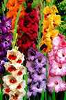
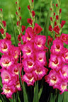
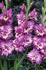
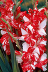
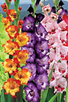
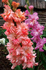
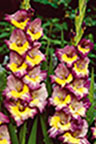
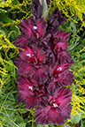

Гладиолусы
Цветок гладиолус, или шпажник является давним и любимым украшением наших клумб и садов, хотя за 300 лет до нашей эры, в Древней Греции, он считался сорняком пшеничных полей. Но в Древнем Риме величественные цветы гладиолусы уже украшали сады патрициев. В наши дни желающих выращивать их становится всё больше.
Как и остальные цветы, величественные и прекрасные гладиолусы постоянно нуждаются в хорошей заботе и внимании. Особенно важна правильная посадка и уход весной. Хоть гладиолусы и можно назвать капризными цветами, выращивание этих растений сторицей окупается.
|  |  |  |  |
|  |  |  |  |